Tolv ferdige Excel-modeller for verdsettelse, regnskap og transaksjoner. Tospråklige etiketter (norsk/engelsk), sell-side-fargekoding, sample-data du faktisk kan trykke på. Bygd fra grunnen — ikke nedlastede maler i forkledning.
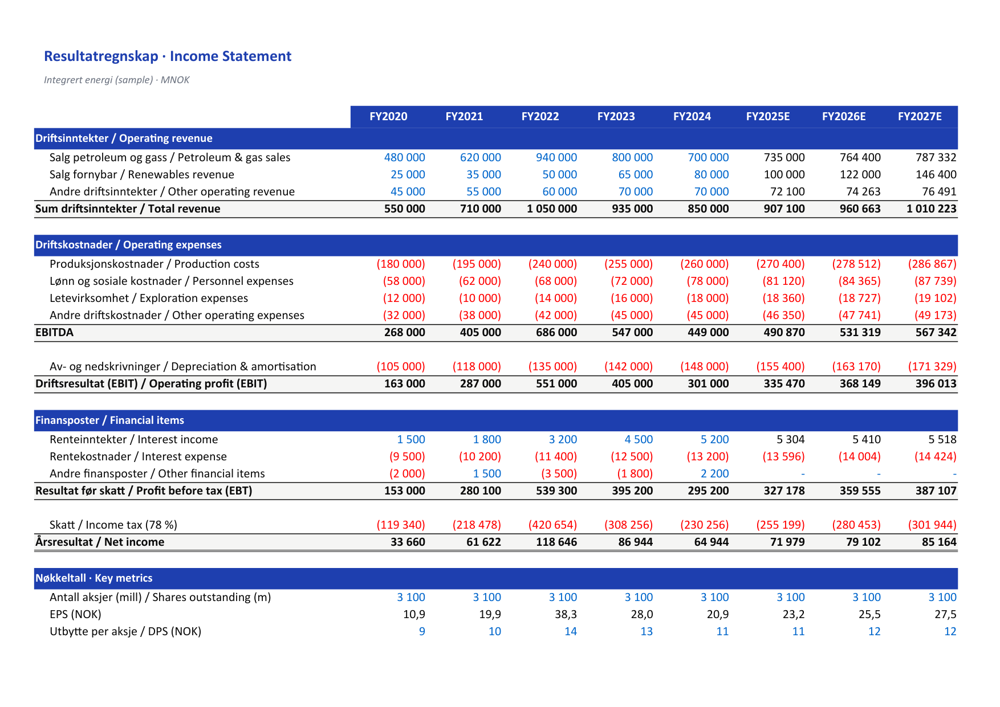
Standard format med drift, finans og bunnlinje. Driftsmargin, EBITDA-bro, kvartalsoppstilling og fem år historikk + tre år prognose. Sample-data: Equinor-aktig integrert energi.
Last ned .xlsx ↓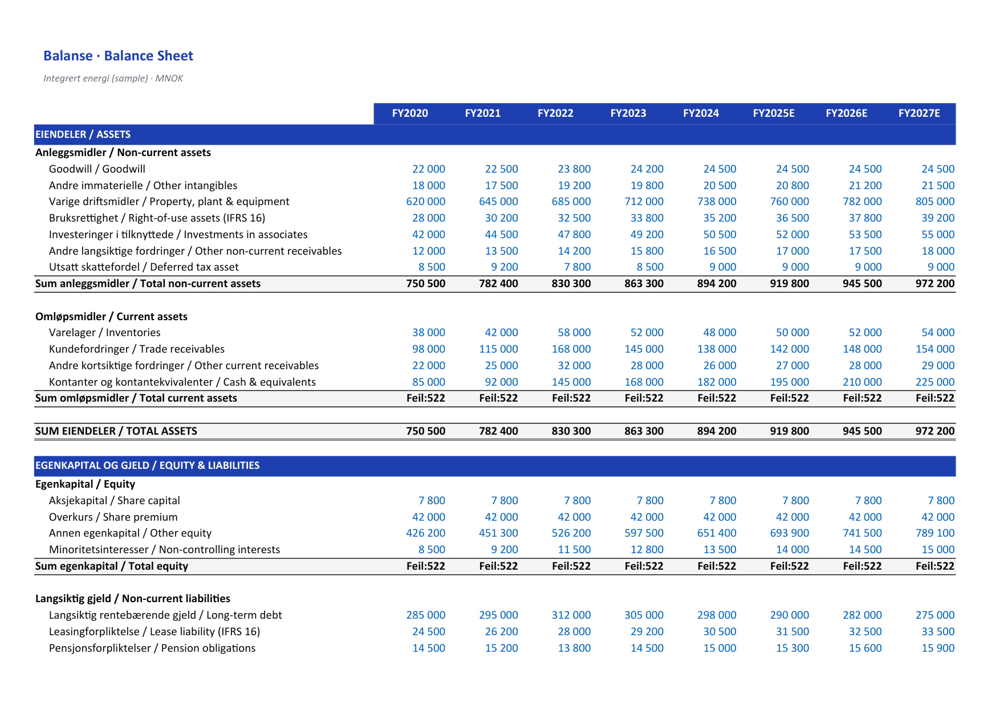
Eiendeler/gjeld/egenkapital med IFRS-aktig oppdeling. Working capital-blokk, immaterielle, leasingforpliktelse (IFRS 16), og automatisk balansesjekk-flag. Common-size i tilstøtende kolonne.
Last ned .xlsx ↓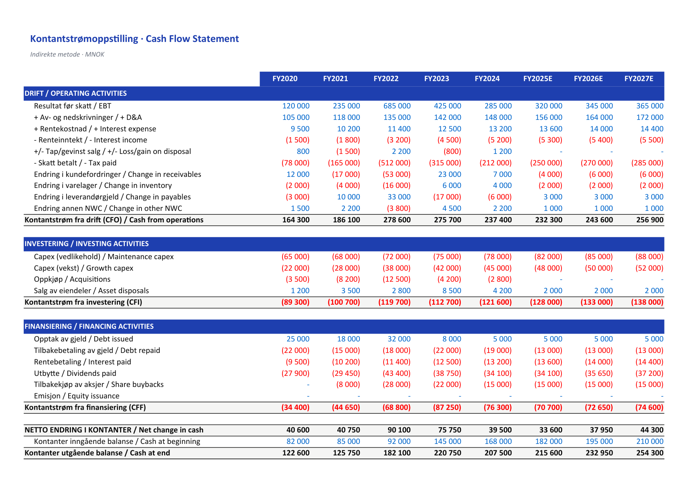
Indirekte metode: drift, investering, finansiering. Avstemming fra resultat til CFO, capex-spesifikasjon, fri kontantstrøm til selskap (FCFF) og til egenkapital (FCFE) regnet ut nederst.
Last ned .xlsx ↓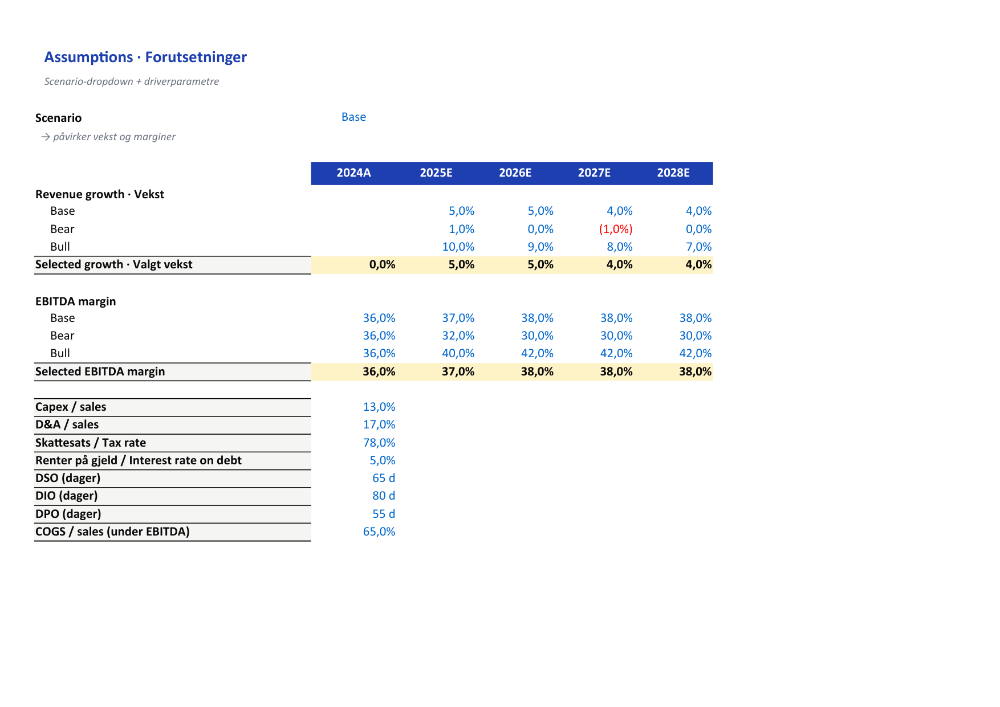
Sammenkoblet IS/BS/CFS med revenue-build, opex-driver, capex-plan, working capital-skjema og gjeldsplan. Sirkulær logikk for rentekostnad (med iterative calculations slått på). Tre scenarioer via dropdown.
Last ned .xlsx ↓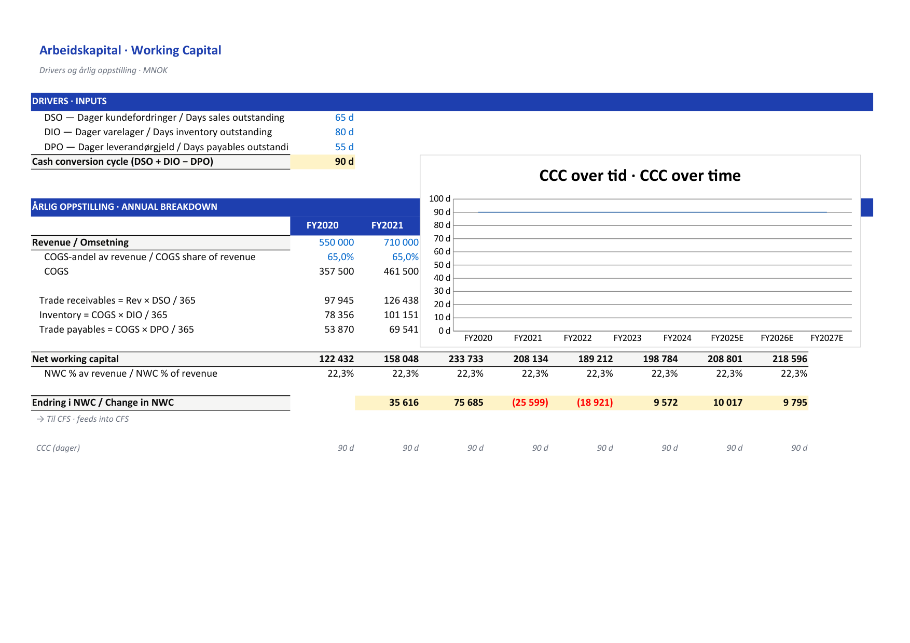
DSO/DPO/DIO som driver kundefordringer, leverandørgjeld og varelager. Cash conversion cycle, NWC som % av omsetning, og endring i NWC som mater inn i kontantstrøm.
Last ned .xlsx ↓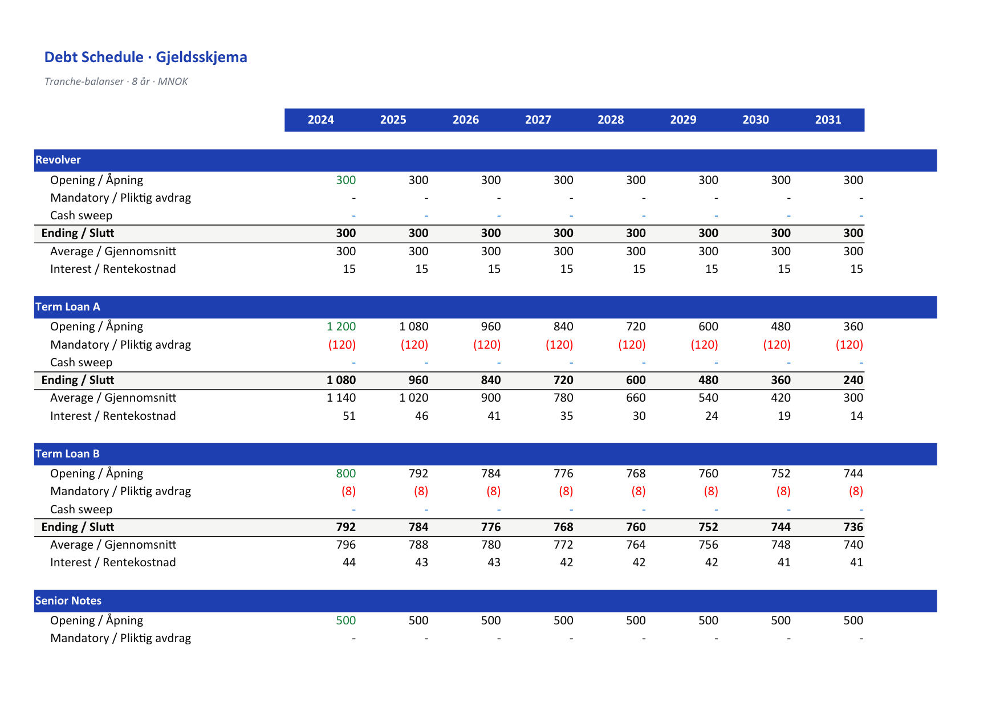
Tranche-for-tranche debt waterfall: revolver, term loan A/B, senior notes. Mandatory + optional repayments, cash sweep-logikk, gjennomsnittsbalanse for rentekostnad og leverage-covenants.
Last ned .xlsx ↓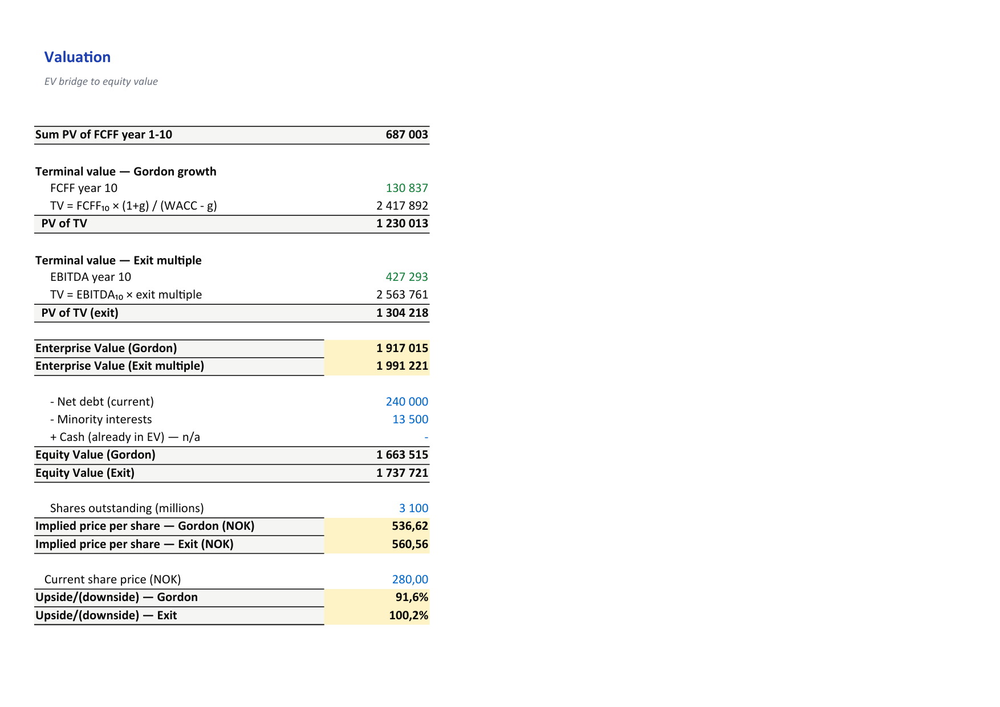
Ti års eksplisitt FCFF-prognose, terminalverdi (Gordon + exit-multiple, side om side), bro fra enterprise value til equity value per aksje. Toveis sensitivitetstabell (WACC × g) og scenario-toggle.
Last ned .xlsx ↓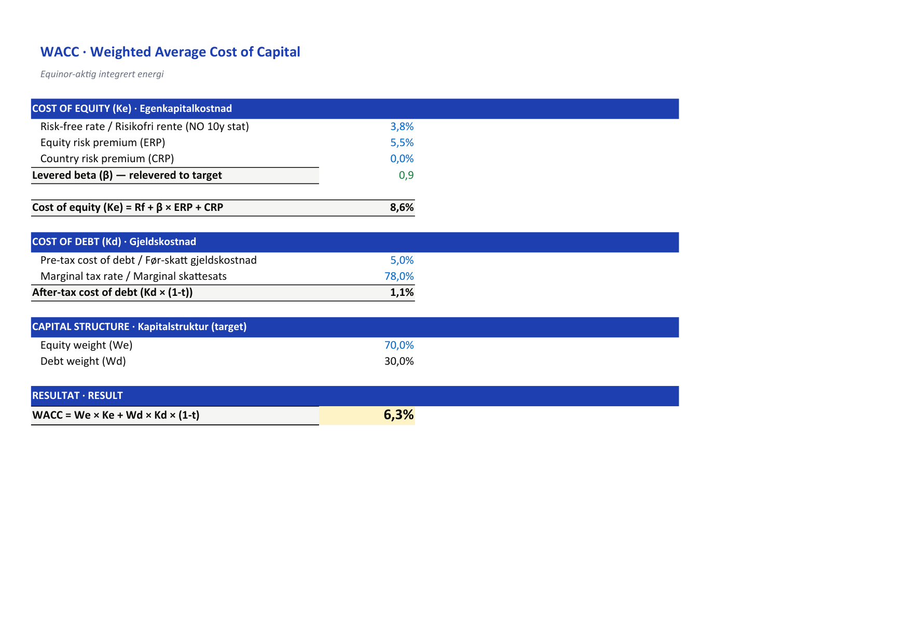
Cost of equity via CAPM (risikofri + ulevered beta × ERP + relevering), cost of debt etter skatt, mål-kapitalstruktur. Peer-tabell for beta-unlevering. Resultatfelt med kildehenvisning per input.
Last ned .xlsx ↓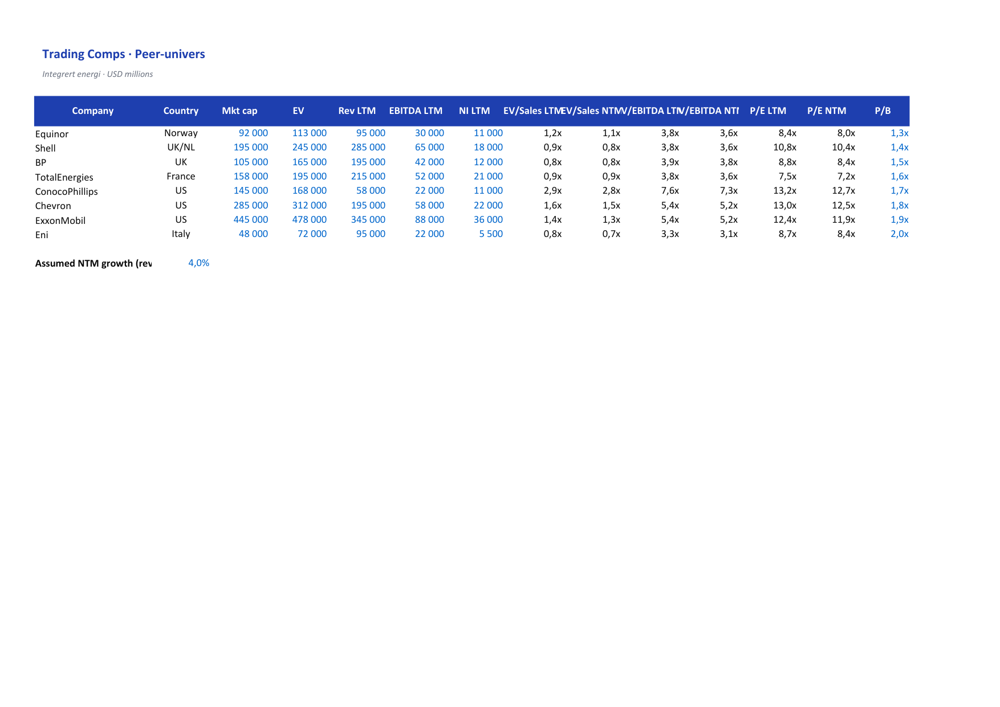
Peer-univers med EV/EBITDA, EV/Sales, P/E, P/B på LTM, NTM, NTM+1. Statistikk (min/25p/median/snitt/75p/max) nederst, anvendt på subjekt-selskap for implisert verdi-spenn.
Last ned .xlsx ↓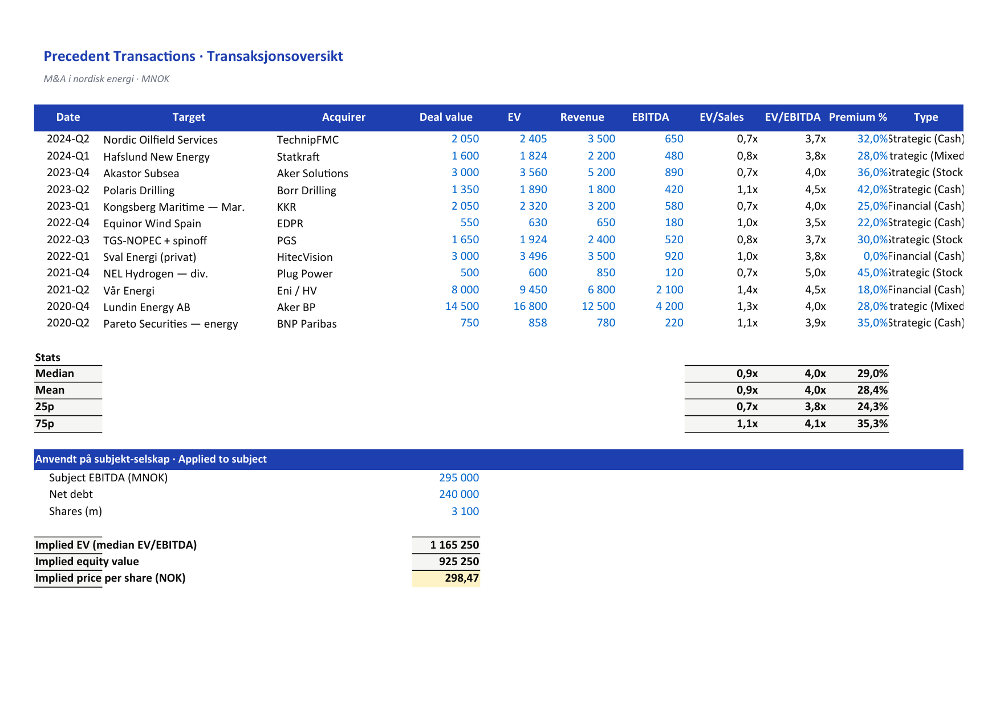
Historiske M&A-transaksjoner i bransjen med kjøpspris, EV/EBITDA og EV/Sales på transaksjonstidspunktet. Premie betalt over uberørt pris, finansiering (cash/aksjer), strategisk vs financial.
Last ned .xlsx ↓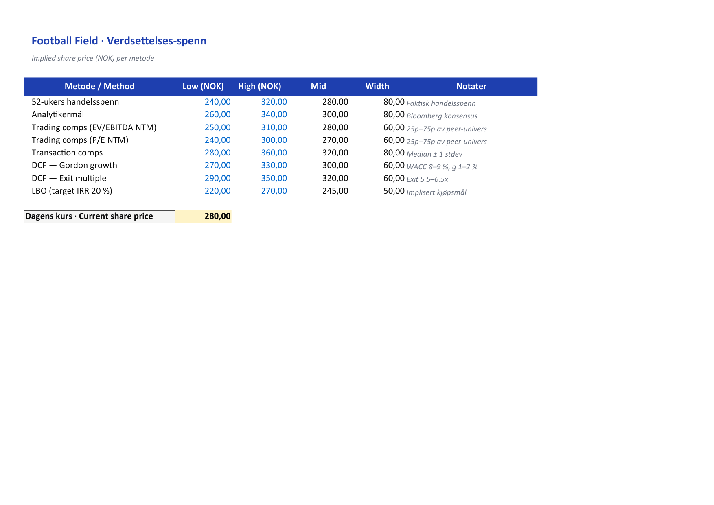
Samler DCF (Gordon + exit), trading comps, transaction comps, 52-ukers handelsspenn og analytikermål i én floating-bar chart. Implisert pris per aksje med low/high-spenn per metode.
Last ned .xlsx ↓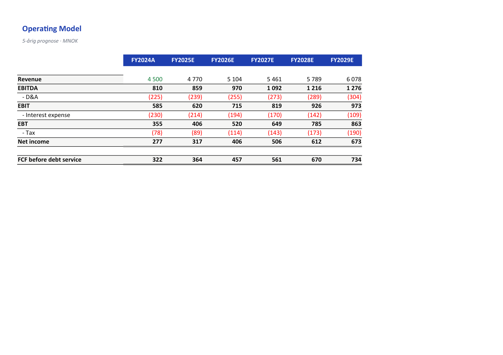
Sources & uses, gjeldspaal med revolver/TLA/TLB/sub-notes, fri kontantstrøm etter rente og obligatorisk avdrag, cash sweep. Exit i år 5 ved EBITDA-multipel. IRR, MOIC og sensitivitetstabell på exit-multipel × leverage.
Last ned .xlsx ↓